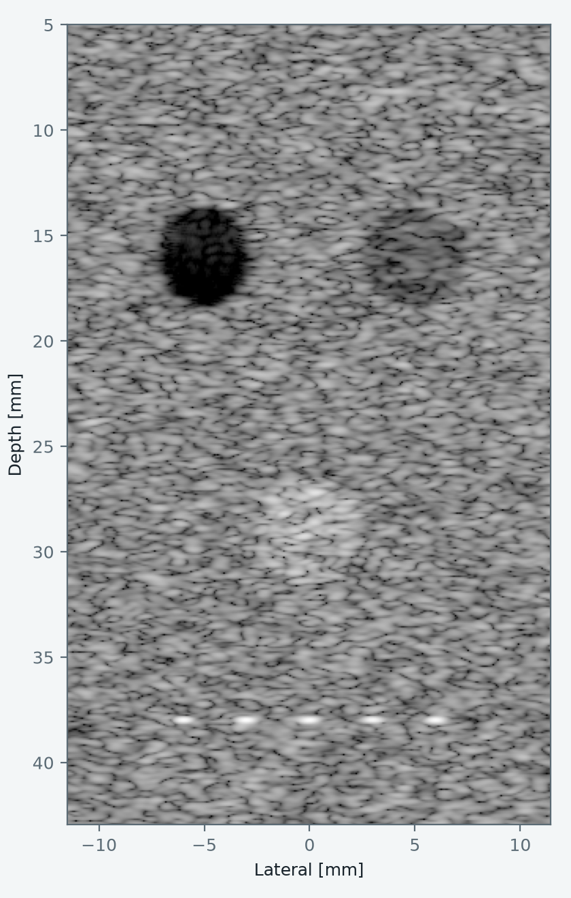
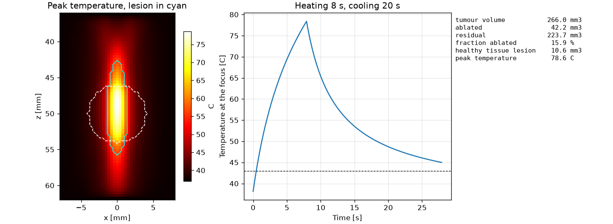
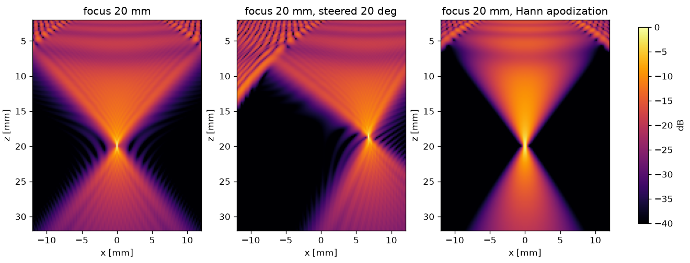
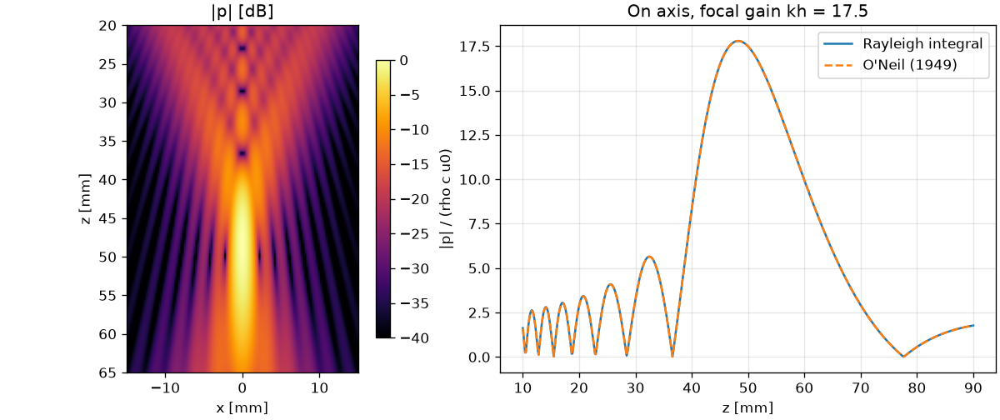
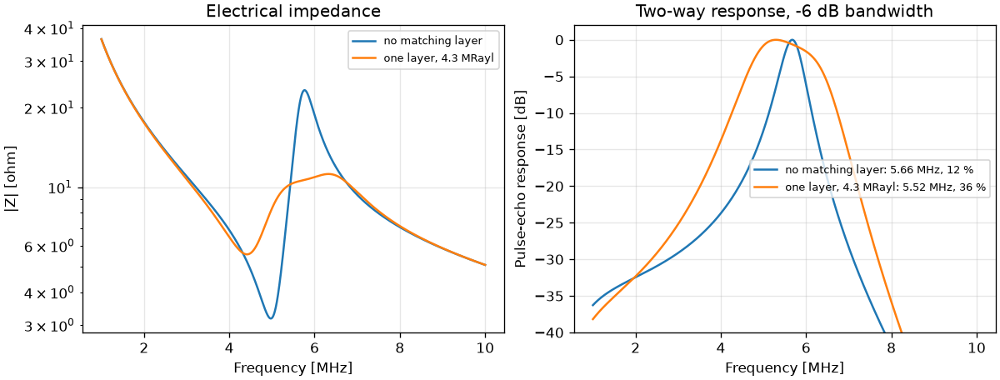

SonoSK
An open-source Python library for medical ultrasound. Design a probe, place it in front of a tissue phantom, and get the B-mode image, or heat a target and see the temperature, the thermal dose and the lesion left behind.

What it simulates
- Transducers
- Flat and focused elements, annular arrays, linear and phased arrays with an elevation lens, convex and endocavity arrays, matrix arrays and line-focus sources, with focusing, steering and apodization.
- Pressure fields
- Rayleigh integral in an attenuating medium and the angular spectrum method, on lines, planes and volumes.
- Imaging
- Pulse-echo signals from scatterer phantoms, plane, diverging and focused transmits, delay-and-sum beamforming and compounding.
- Therapy
- Heat from the field, the Pennes bioheat equation in 1, 2 and 3 dimensions, CEM43 dose, lesion maps, and the ablated and residual target.
- Probe design
- Mason model of a piezoelectric element with backing and matching layers: impedance, transmit and pulse-echo response.
- Safety and quality
- Mechanical index, derated intensities and FDA limits; resolution, contrast, CNR, gCNR and speckle statistics.
Figures made with SonoSK




A first simulation
import sonosk as sk
from sonosk import field, transducer
probe = transducer.linear_array(128, pitch=0.3e-3, height=5e-3, elev_focus=20e-3)
probe.focus((0, 0, 20e-3), c=1540.0)
grid = sk.Grid.centered((121, 151), 0.2e-3, depth_start=2e-3)
p = field.rayleigh_grid(probe, grid, f=5e6, c=1540.0, alpha0=0.5)The getting started page continues from here to a phantom, an image, its quality measures and a heating exposure. Each solver is checked against a closed-form result; the comparisons are on the validation page, and the plan for tissue data and organ phantoms is on the roadmap.
Citing SonoSK
If SonoSK helps your research, please cite the release you used. Every release is archived on Zenodo with its own DOI, and the citation in APA and BibTeX form is under "Cite this repository" on the GitHub page.